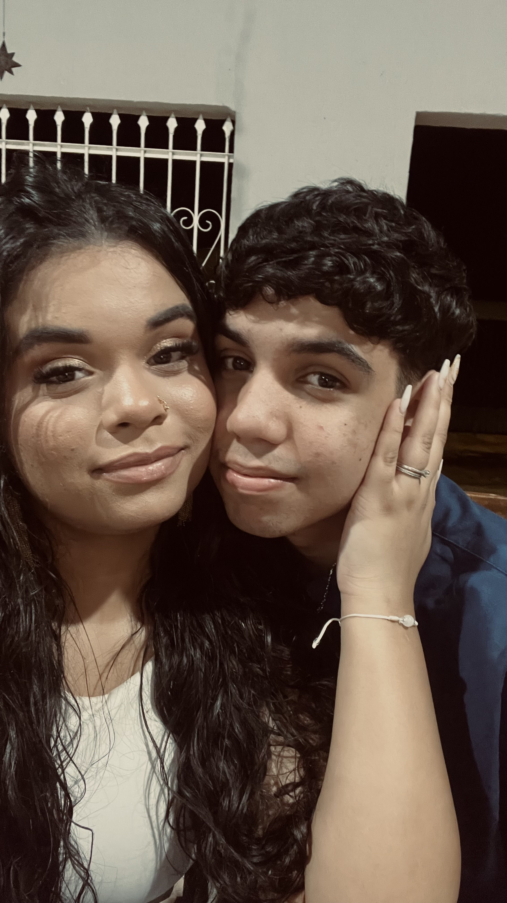
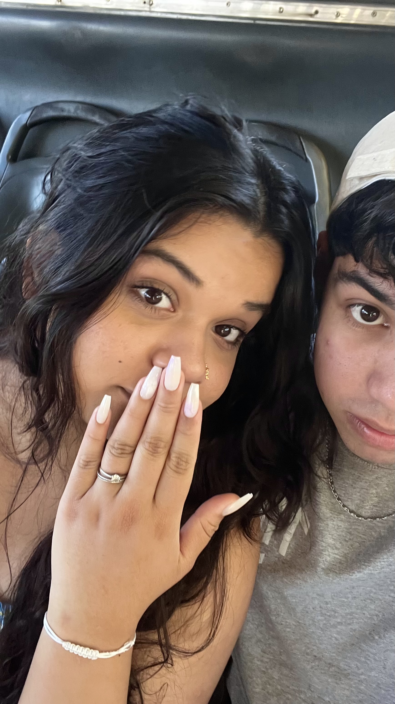
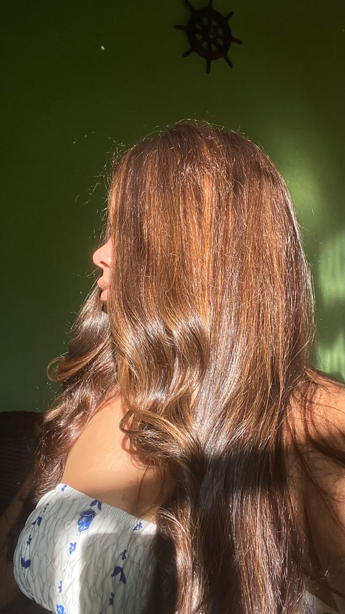
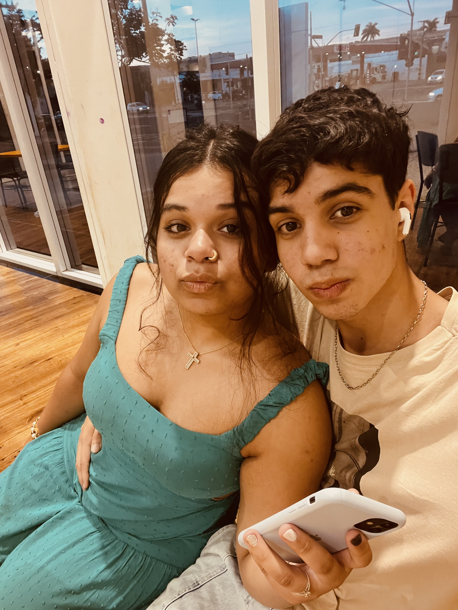
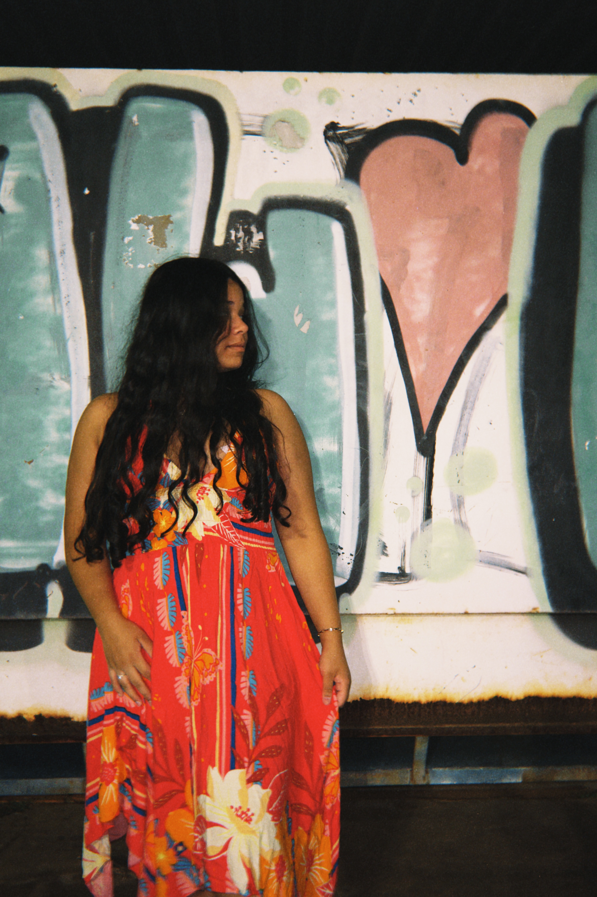
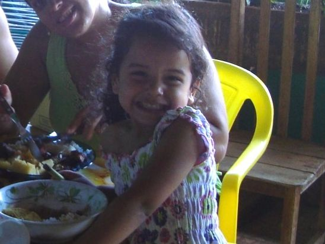

O tempo ao seu lado ❤️
Cada segundo com você é uma lembrança que quero guardar para sempre.
Nossos momentos
Fotografias que guardam sentimentos que palavras nem sempre conseguem explicar.






Se eu não tivesse te conhecido...
Eu ainda amaria você. Em cada detalhe, em cada sorriso, em cada momento simples e em cada novo capítulo da nossa história. Estar ao seu lado é tudo para mim, nunca irei deixar de agradecer por ser quem você é. Obrigado por fazer meus dias mais felizes e por ser alguém tão especial na minha vida. Quero continuar construindo nossas memórias, vivendo nossos sonhos e descobrindo novas razões para amar você.
Com todo meu amor. ♡Feliz aniversário meu bem!!
Nossa trilha sonora ♡
Existem melodias que me fazem lembrar de você. Separei algumas delas para guardar aqui.
Um pedacinho do meu coração
Existe uma fotografia que guarda um pouquinho de tudo isso...